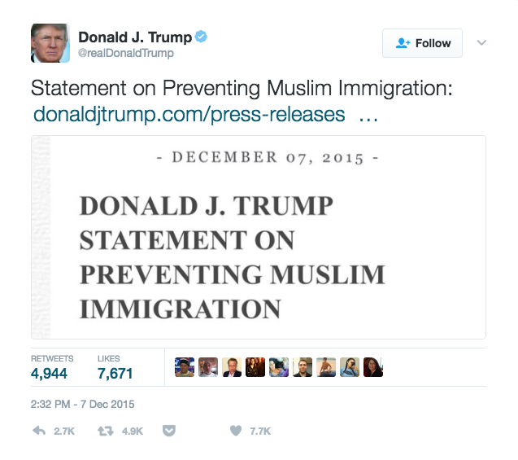
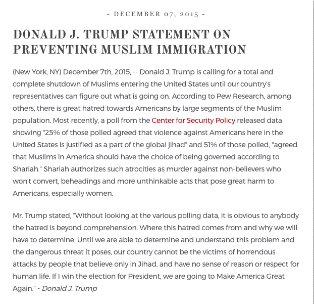
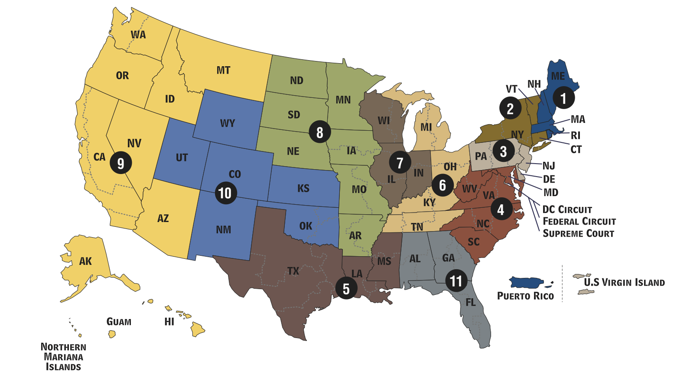

Immigration Law Under Trump
Two Months of Malevolent Incompetence
John Palmer
Interdisciplinary Research Group on Immigration (GRITIM) and
Sociodemograpy Research Group (DemoSoc)
Universitat Pompeu Fabra
Seminari del Grup d’Immigració (IDP-UB), 29 March 2017
Background: Trump Campaign
Mexican Rapists Statement
When Mexico sends its people, they're not sending their best. . . . They're bringing drugs. They're bringing crime. They're rapists. And some, I assume, are good people.
-- Donald Trump, 16 June 2015 speech announcing candidacy.
Response to Anti-Hispanic Violence
The homeless man was lying on the ground, shaking, when police arrived early Wednesday. His face was soaked, apparently with urine, his nose broken, his chest and arms battered.
Police said two brothers from South Boston ambushed the 58-year-old as he slept outside of a Dorchester MBTA stop, and targeted him because he is Hispanic. One of the brothers said he was inspired in part by GOP presidential candidate Donald Trump.
Police said two brothers from South Boston ambushed the 58-year-old as he slept outside of a Dorchester MBTA stop, and targeted him because he is Hispanic. One of the brothers said he was inspired in part by GOP presidential candidate Donald Trump.
-- Boston Globe, 19 August 2015.
Response to Anti-Hispanic Violence
Told of the attack . . . Mr. Trump said at a news conference late Wednesday that it was the first he had heard of it.
“It would be a shame,” Mr. Trump said, before adding: “I will say that people who are following me are very passionate. They love this country and they want this country to be great again. They are passionate.
“It would be a shame,” Mr. Trump said, before adding: “I will say that people who are following me are very passionate. They love this country and they want this country to be great again. They are passionate.
-- NYT, 20 August 2015.
Anti-Muslim Statements
Hey, I watched when the World Trade Center came tumbling down. And I watched in Jersey City, New Jersey, where thousands and thousands of people were cheering as that building was coming down. Thousands of people were cheering.
-- Donald Trump, 19 November 2015 campaign rally.
Muslim Ban
Muslim Ban
Muslim Ban
Background: Trump Team
Chief Strategist: Stephen K. Bannon
Chief Strategist: Stephen K. Bannon
I think anger is a good thing. This country is in a crisis. And if you’re fighting to save this country, if you’re fighting to take this country back, it’s not going to be sunshine and patriots. It’s going to be people who want to fight.
-- Bannon quoted by Atlantic, 24 August 2016.
Chief Strategist: Stephen K. Bannon
Let the grassroots turn on the hate because that’s the ONLY thing that will make them do their duty.
-- 2014 email from Bannon to Breitbart editor, published by Daily Beast
Trump Team
Senior Policy Advisor: Stephen Miller

Senior Policy Advisor: Stephen Miller
The powers of the president to protect our country are very substantial and will not be questioned.
-- Stephen Miller in interview on "Face the Nation", 12 February 2017.
Trump Team
Attorney General: Jefferson Beauregard Sessions III

Trump Team
Secretary of Homeland Security: John Kelly

Trump Team
Secretary of State: Rex Tillerson
Trump Executive Orders
- 25 Jan. - EO 13767: Border Security and Immigration Enforcement Improvements
- 25 Jan. - EO 13768: Enhancing Public Safety in the Interior of the United States
- 27 Jan. - EO 13769: Protecting the Nation From Foreign Terrorist Entry Into the United States (Entry Ban I)
- 9 Feb. - EO 13776: Task Force on Crime Reduction and Public Safety
- 6 Mar. - EO 13780: Protecting the Nation From Foreign Terrorist Entry Into the United States (Entry Ban II)
Federal Court Jurisdictions
 Source: Administrative Office of the U.S. CourtsEntry Ban I Litigation
Washington v. Trump
Trump Press Briefing: 16 Feb. 2017
Travel Ban
EO 13767: Border Security and Immigration Enforcement Improvements
- Border wall
- Increased detention
- 5,000 additional border patrol agents
- State roll in enforcement
- Stricter credible fear interviews
EO 13768: Enhancing Public Safety in the Interior of the United States
- Drastically expands enforcement priorities
- Civil fines and penalties
- 10,000 additional ICE officers
- State roll in enforcement
- WIthholding federal funds from sanctuary jurisdictions